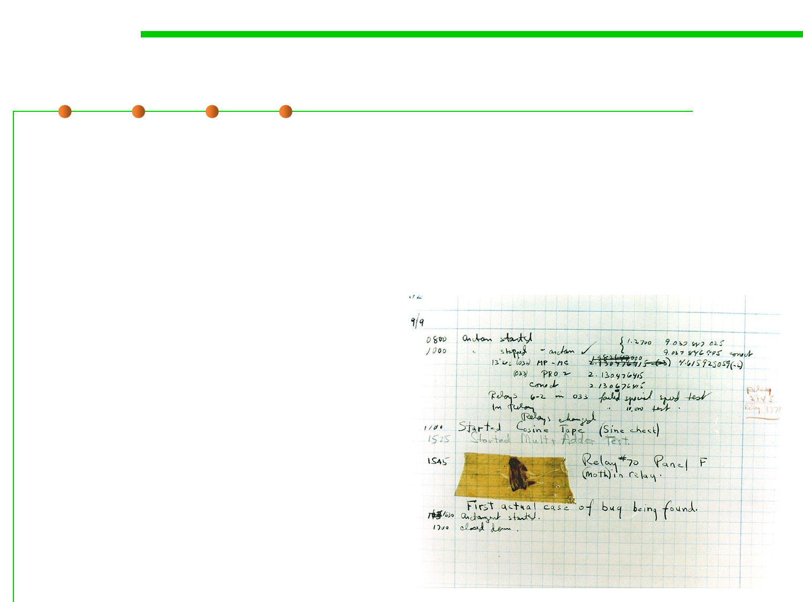

Bug? De-bug?
7.4 Debugging
▪ The terms "bug" and "debugging" are popularly attributed
to Admiral Grace Hopper in the 1940s.
▪ While she was working on a Mark II Computer at Harvard
University, her associates discovered a moth(飞蛾) stuck in a relay(
继电器) and thereby impeding operation,
whereupon she remarked
that they were "debugging"
the system.